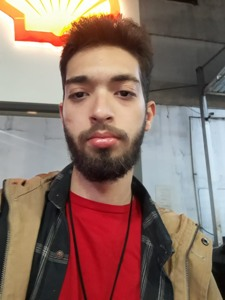

20 anos, solteiro, natural de Franca/SP

Desejo a você uma vida longa e que você voe alto
Sorrisos você dará e lágrimas você chorará
E tudo que você tocar e tudo que você ver
É tudo o que sua vida sempre será.
(Pink Floyd, Breath (In the Air))
Sou um jovem em processo de amadurecimento, entrando na fase adulta e já aprendendo com o desencanto. Venho de família simples. Sou cristão católico e apaixonado pela natureza. Gosto de rock e de viajar.
Após o ensino médio, me formei como técnico em administração na Etec Dr. Júlio Cardoso e hoje já estou a quase dois anos trabalhando na área, com planos de começar na área de desenvolvimento em breve.